习题十五解答
1.记长为a，宽为b的长方形为（a，b）（a≥b），则图中长方形按长宽规格可分如下几类：
（1，1）有16个，
（2，1）有12+12=24个，
（2，2）有9个，
（3，1）有8+8=16个，
（3，2）有6+6=12个，
（3，3）有4个，
（4，1）有4+4=8个，
（4，2）有3+3=6个，
（4，3）有2+2=4个，
（4，4）有1个。
∴16+24+9+16+12+4+8+6+4+1=100个。
它们的面积之和为
16×1+24×2+9×4+16×3+12×6+4×9+8×4+6×8+4×12+1×16=400。
2.按数列的构造规律多写一些：
2，7，1，4，7，4，2，8，2，8，8，1，6，1，6，1，6，6，4，8，6，6，6，6，6，3，6，…
显然6是出现了，而且出现次数比较多.究竟会出现多少次呢？如果出现的次数有限，就得说明从某一项起，以后不会出现6，再数一数出现次数.如果无论哪一项之后总有6出现，那么6就出现无限多次.从以上已经写出的部分，可以看到数列中出现了一个片段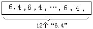，那么以后必然会出现片段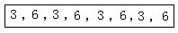（不一定与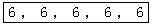相邻），再以后一定会出现片段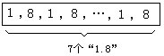，在这一片段之后
又会出现片段
后又会出现片段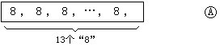
在片段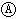之后又会出现片段
在片段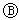之后又会出现片段
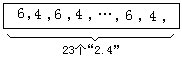
在片段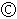之后又会出现片段
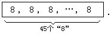
由此发现了一个规律：类似于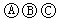的片段会反复无限多次出现（这些片段不一定相邻）.因为片段中 有6.所以在所给的无穷数列中，6出现无穷多次.